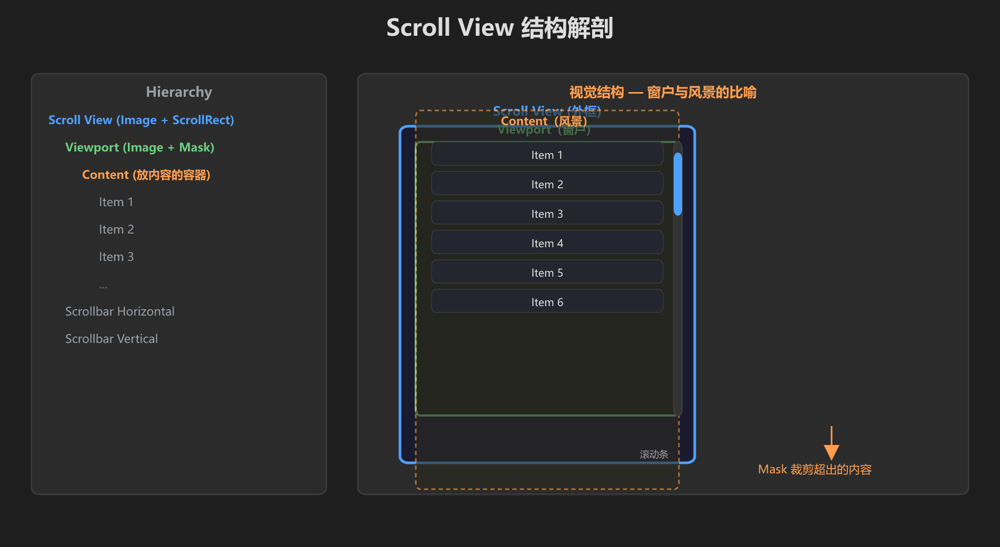
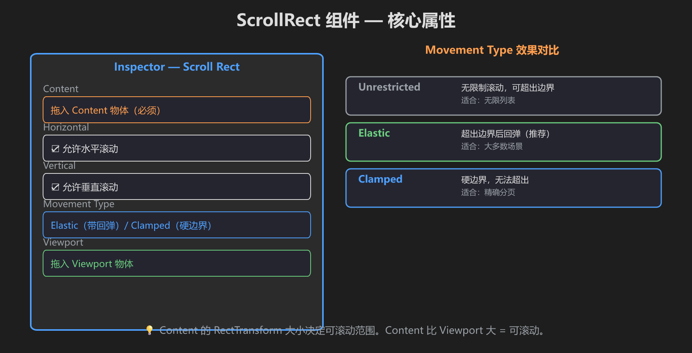
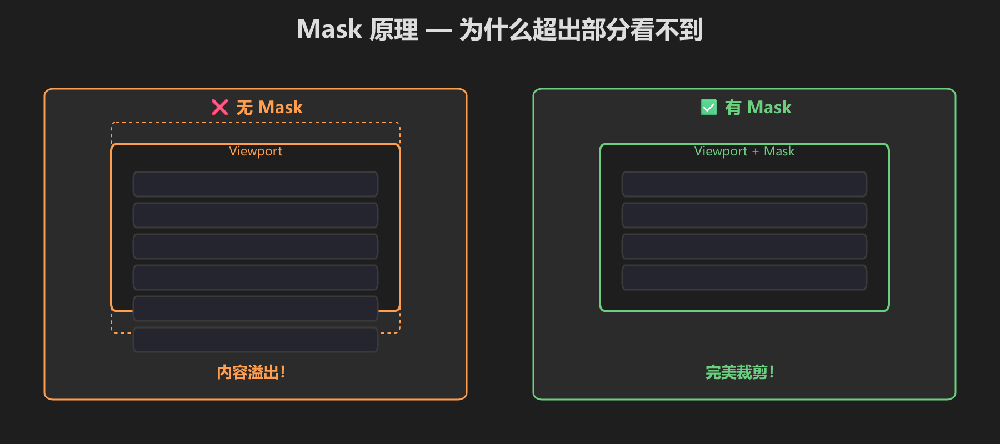
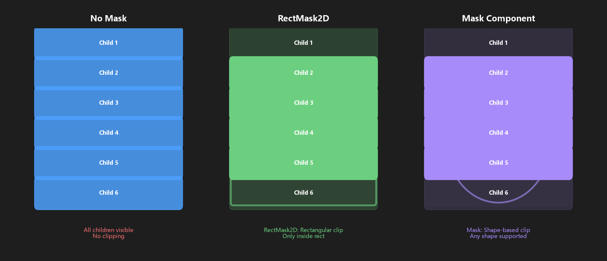
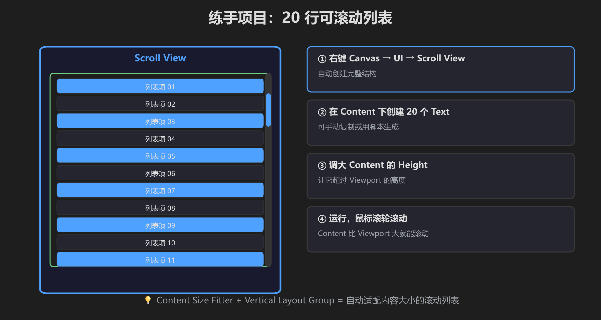
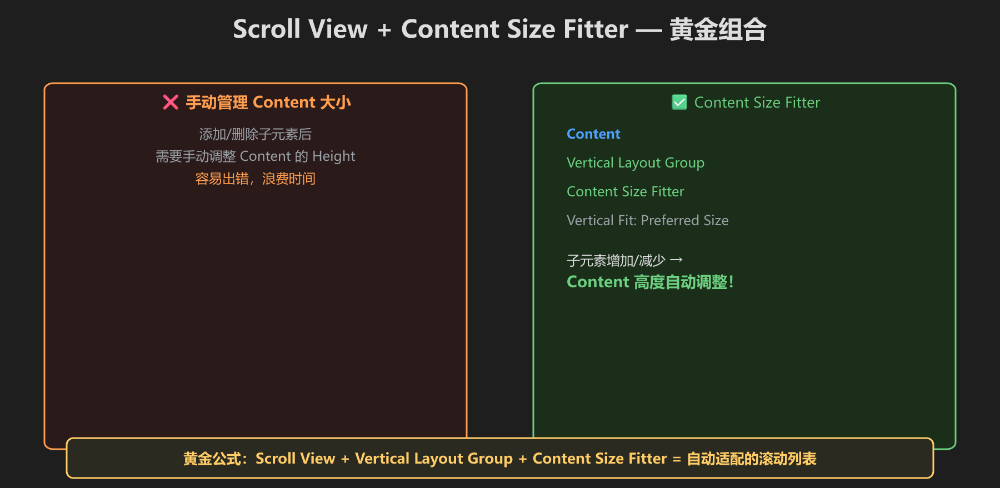

第 9 篇：Scroll View — 内容太多放不下时
UI 内容超过面板大小？Scroll View 让内容可以滚动。
🔍 结构解剖

Viewport 是"窗户"，Content 是"风景" — 风景比窗户大就能滚动
⚙️ ScrollRect 核心属性

Content（必须拖入）、Horizontal/Vertical、Movement Type（Elastic 带回弹推荐）
✂️ Mask 原理

Mask 裁掉超出 Viewport 的内容 — 没有 Mask 内容会溢出来

无遮罩 / RectMask2D 矩形裁剪 / Mask 形状裁剪 的对比
📋 练手：20 行可滚动列表

Content 的 Height 大于 Viewport = 可滚动。鼠标滚轮测试。
🔗 黄金组合

Scroll View + Vertical Layout Group + Content Size Fitter = 自动适配的滚动列表
练手步骤
- 右键 Canvas → UI → Scroll View
- 在 Content 下创建 20 个 Text
- 调大 Content 的 Height 超过 Viewport
- 运行，鼠标滚轮滚动
- [ ] 能看到滚动条
- [ ] 鼠标滚轮可以滚动
- [ ] 超出 Viewport 的内容被裁剪